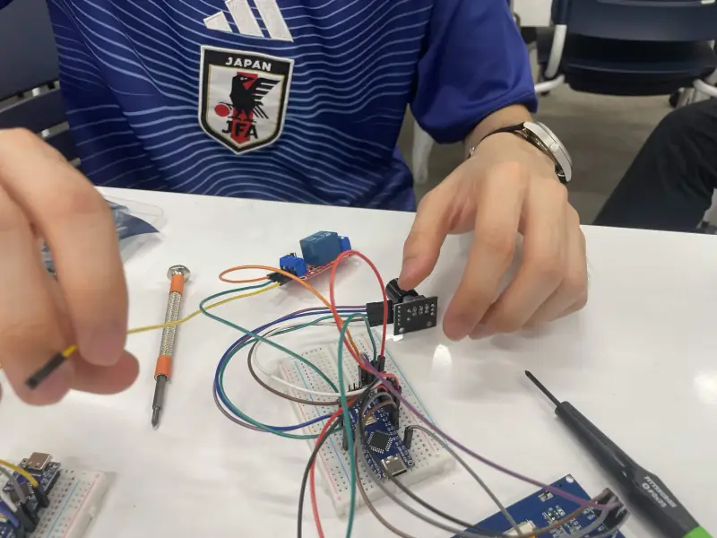
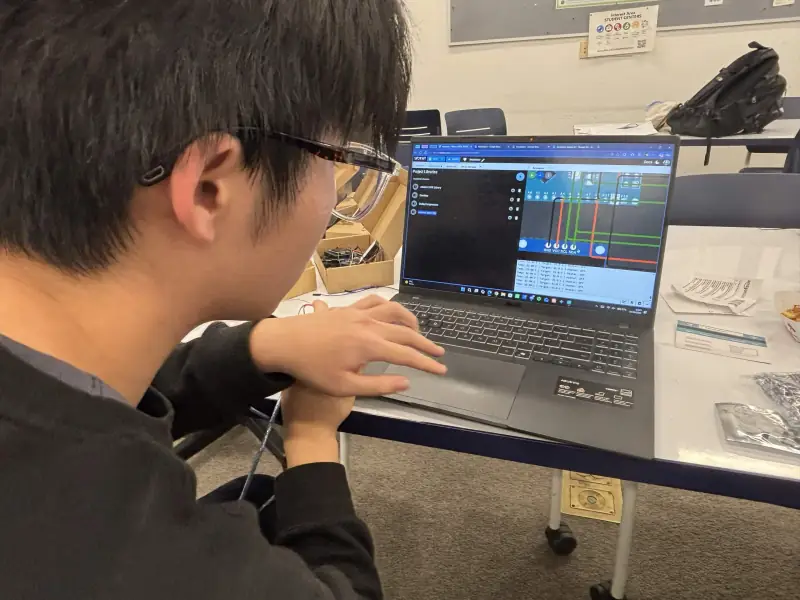
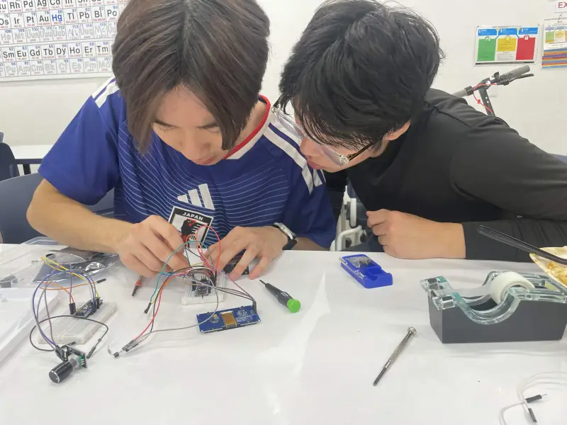
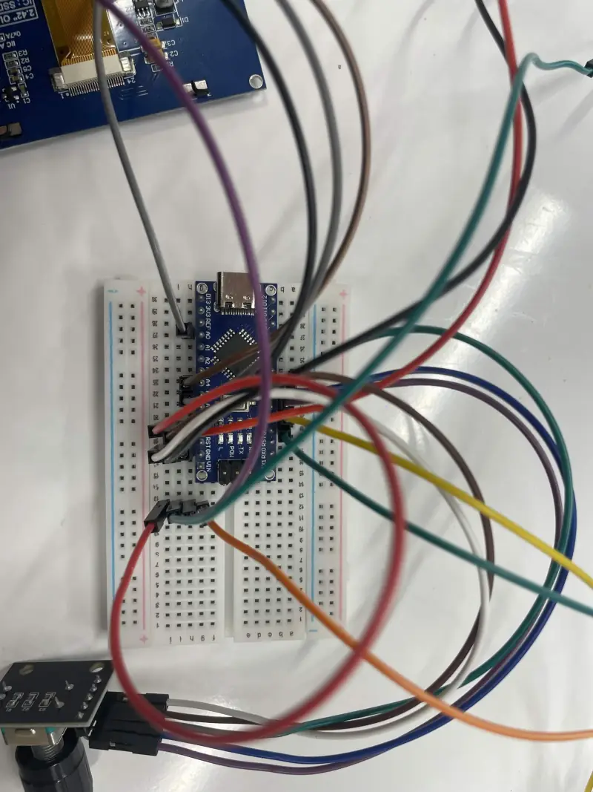
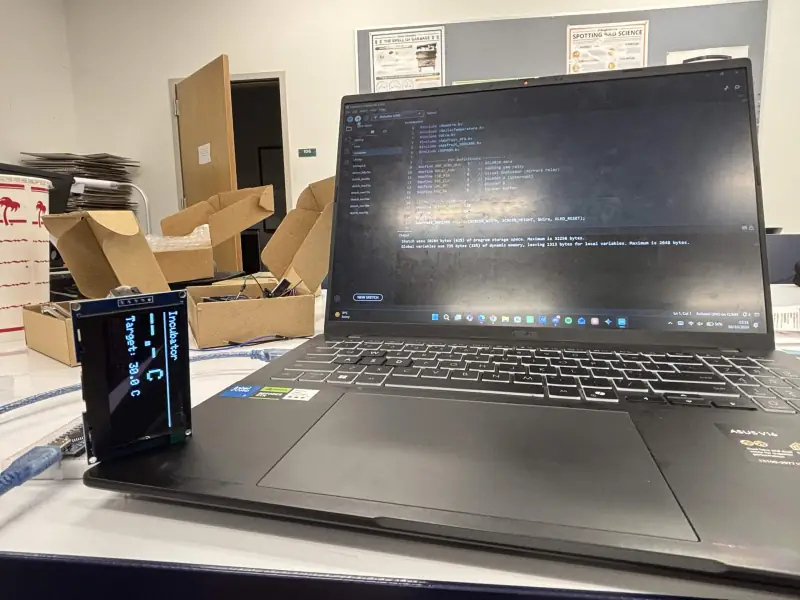
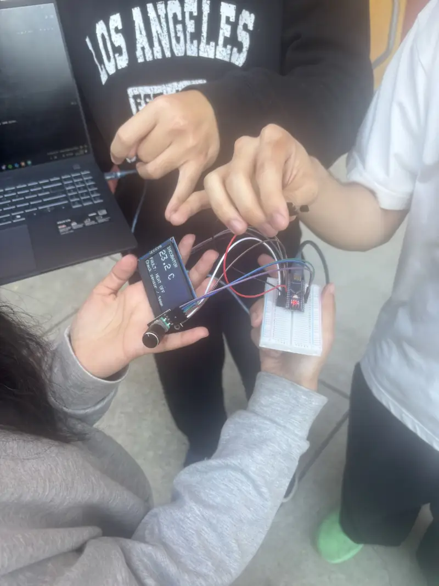
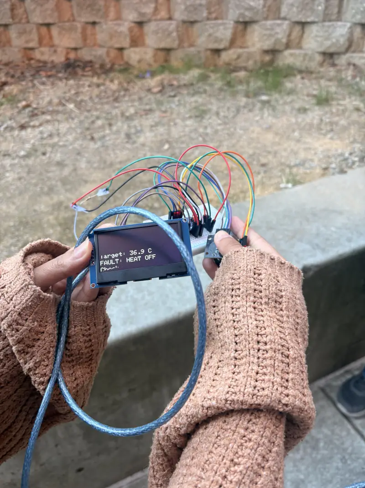
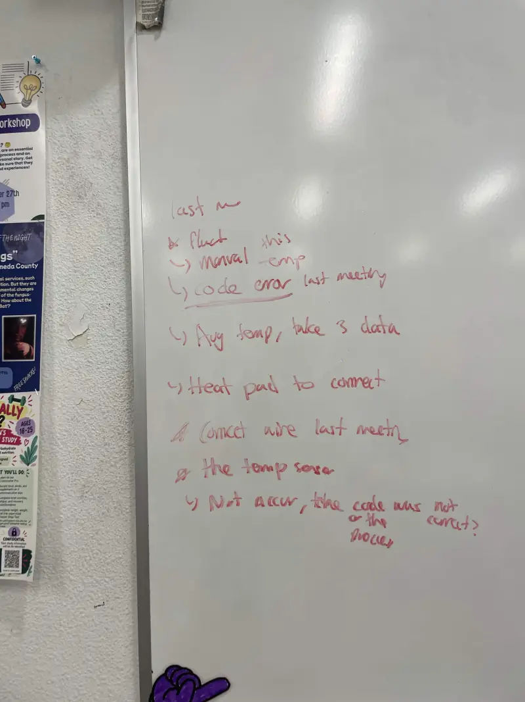

Build log
Building theheater controller
How the capsule's temperature controller moved from simulation to the bench, in the team's own photos.

-
Step 1
Simulate
The incubator circuit runs in a Wokwi simulation before any wiring. The serial log prints lines such as “Temp: 32.00 C | Target: 31.0 C | Heater: OFF”.

-
Step 2
Wire
On the bench the circuit is wired on a breadboard: an Arduino Nano, a 2.42-inch OLED display, a rotary encoder and a relay module.


-
Step 3
Code and display
The Arduino sketch uses the OneWire, DallasTemperature and SSD1306 libraries. The OLED shows the controller state, here “Incubator, Target: 30.0 C”.

-
Step 4
Test
The controller is taken outside and handled as a unit. Both readouts show fault messages: “FAULT: HEAT OFF” with a prompt to check the sensor / temp, and “Target: 36.9 C” with “FAULT: HEAT OFF”.


-
Step 5
Debug notes
The whiteboard from a team meeting lists what to fix next: a code error from the last meeting, averaging the temperature over 3 readings, connecting the heat pad, and a temperature sensor that was not accurate, with the open question of whether the code or the process was at fault.
